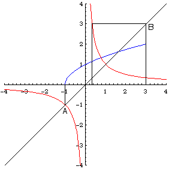

|  |
| Range of g is all reals except 0; domain of f is [-1,3]. |
| (Domain of f) intersect (Range of g) on the diagonal is AB minus the origin. |
| Project AB horizontally to the graph of g. |
| 1/x = 3 implies x = 1/3. |
| 1/x = -1 implies x = -1. |
| Then project vertically to the x-axis. |
| The domain of f(g) is (-infinity, -1] U [1/3, infinity). |
Return to Examples.